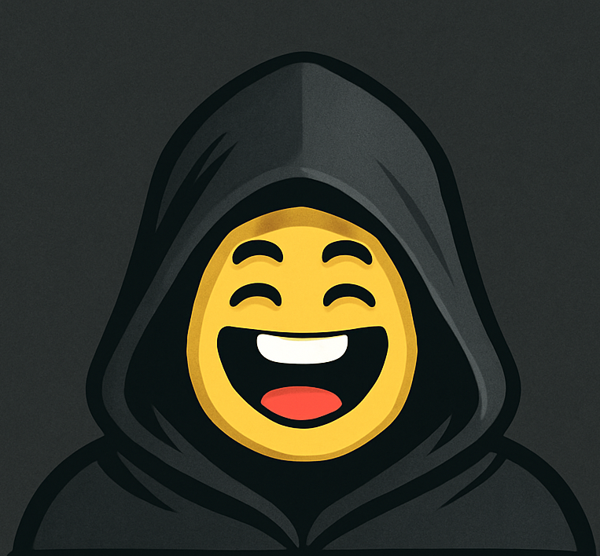
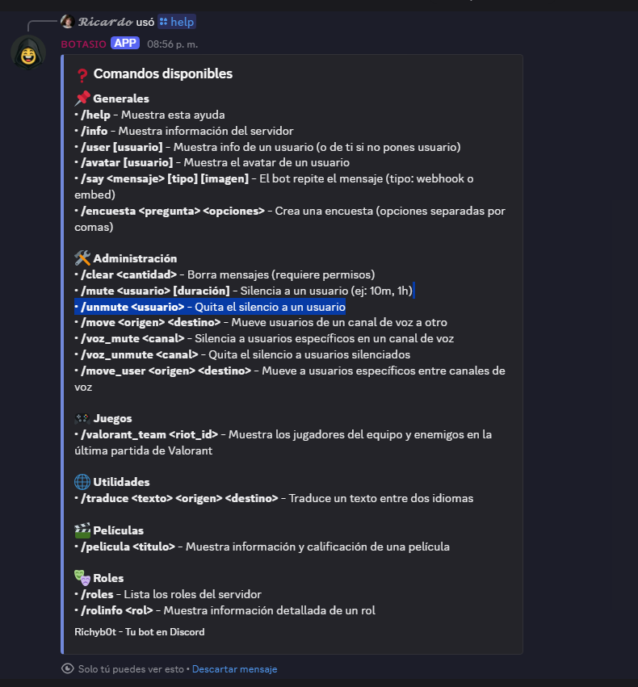

Bot avanzado para moderación, música e interacción en servidores. Soporta botones, menús dinámicos y audio en canales de voz.
Bot modular construido con Discord.js v14, con arquitectura de comandos slash y soporte para interacciones avanzadas — botones, menús de selección, modales. Administra roles, moderación y reproducción de audio en tiempo real.
Integra la API de OMDB para consultas de películas, comandos de moderación con baneo/muteo granular, y sistema de estados persistente en canales de voz usando @discordjs/voice.

Integración con OMDB API para consultar puntuación, sinopsis y detalles de cualquier película desde Discord.
Menú interactivo con botones para baneo, muteo temporal y gestión de roles, con log de acciones en canal dedicado.
Sistema de cola de audio con controles de reproducción, pausa y skip, operando en canales de voz con baja latencia.